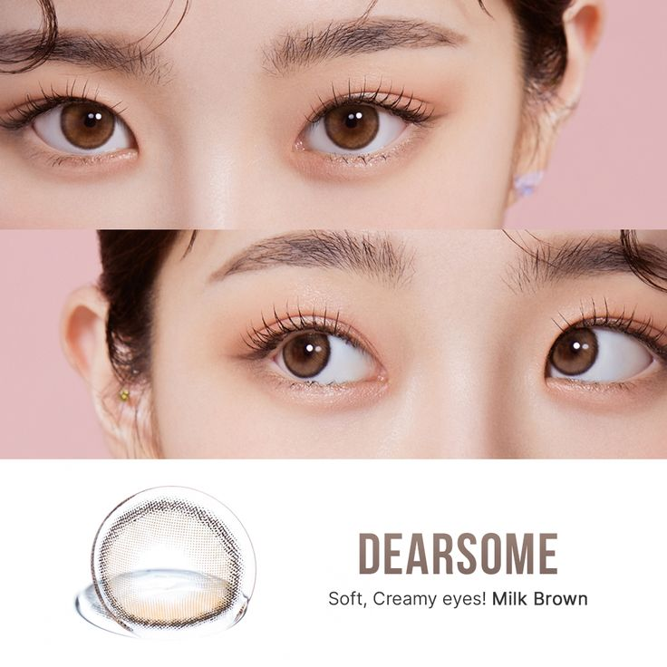

렌즈를 광고하는 포스터이다. 이 포스터를 처음 봤을 때 렌즈 광고가 아니라 화장품 광고인 줄 알았다. 또한 광고를 볼 때 많은 광고에서 예쁘고 잘생긴 연예인을 모델로 내세워 광고한다. 렌즈 광고이면 눈을 강조하면 될 텐데 전체적인 모습을 보일 필요가 있을까라는 의문이 들었다.

정치적 관점
렌즈 광고뿐만 아니라 여러 음식, 상품 광고에서 예쁘고 잘생긴 연예인을 앞세워 광고한다. 정작 제품을 사용하는 사람들은 평범하게 생긴 사람이 많다. 이는 사회적으로 저 선망의 대상을 따라 하고 싶다는 본능적인 생각 때문이다.
나의 생각
광고는 홍보를 위해 만드는 것이다. 그 때문에 사람의 본능을 건드려 홍보하는 것은 어쩔 수 없다. 하지만, 이 광고는 렌즈 광고인 것인지도 모르게 렌즈를 강조한 것인지는 모르겠다. 오히려 입술이 강조된 화장품 광고인 줄 착각하게 만들었다는 점이 아쉬웠다.